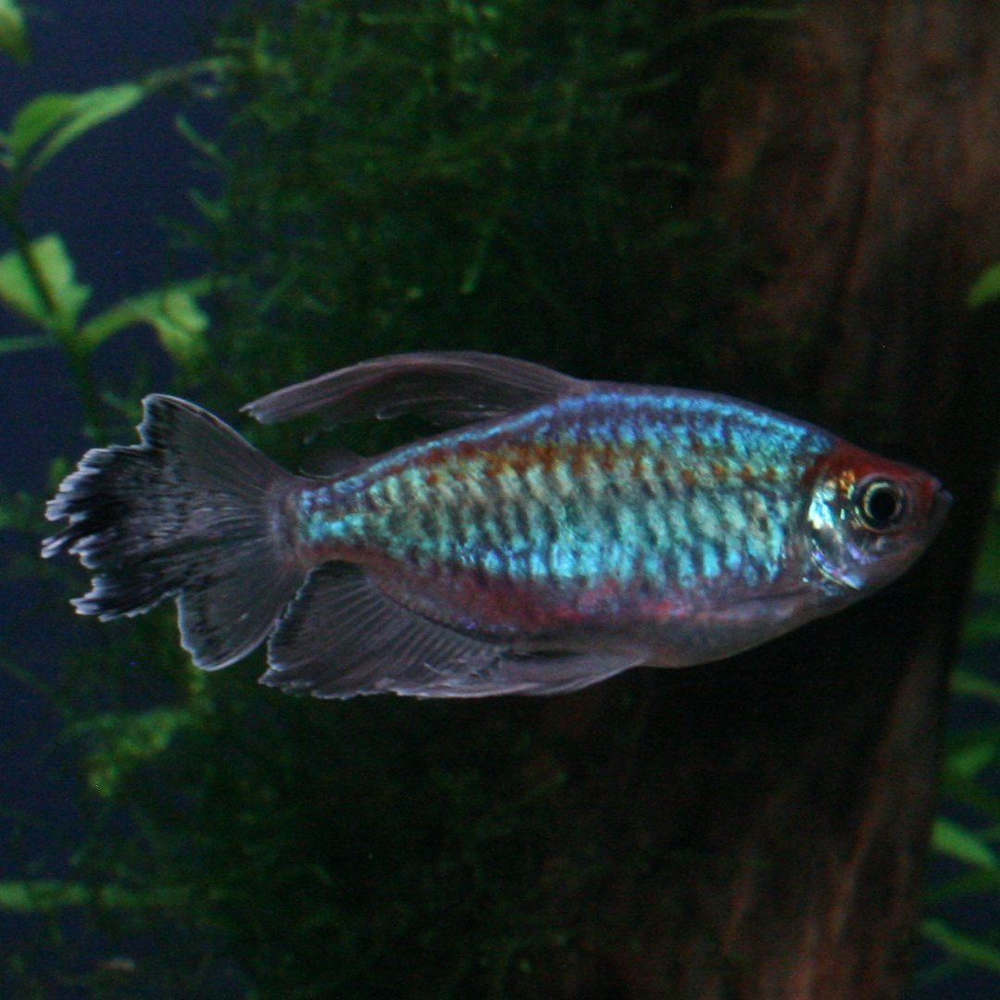

Saketh Marrapu
Student. Data Scientist? Statistician?
Email: saketh.marrapu@gmail.com
GitHub: @smarrapu05
LinkedIn: saketh-marrapu-103a682b2/
Hello! You're on my personal website! I hope you mean to be here.
I'm Saketh Marrapu: 21 years old, living in texas, college student, statistician, data scientist, and an avid fan of things. I'm currently in a limbo between and Undergraduate and Graduate student at the Texas A&M University's (TAMU) Department of Statistics in their BS in Statistics + MS in Statistical Data Science (3+2) program. In addition, I'm pursuing minors in Computer Science and Economics.
I'm currently a data science intern at ENDEAVR and am doing research with TAMU's Animal Science department working with Adeolu Adekunle. In the past I've done research with Dr. Tyler Prochnow's as a part of his SPACES Study, constructing the data pipeline and interpreting social networks. I've also researched with Dr. Huiyan Sang, implementing the TreeSHAP algorithm for BART models in C++ for use in R packages.
My work in school, as you can imagine, is mostly focused on statistics, machine learning, and AI. Check out the projects page if you're interested about the specifics of what projects I've done. In particular, I've grown a large interest in graph based statistical methods. In particular, I enjoy multiple graph statistical methods like MASE and, as you most likely expected, GNNs. Maybe it's too late to still be unsure but if I end up doing a PhD I would like such a thing to be my research focus.
I have already grown tired of speaking about my professional life, so if you'd like to know more about that, please see my resume.
As for about me outside my career. I'm always interested about peoples' favorites so I'll start with some of mine:
- My favorite book is When Breath Becomes Air
- My favorite movie is Ikiru
- My favorite manga is Blue Period
- My favorite album is Pezzi della Sera
- My favorite game is Super Smash Bros. Melee
My hobbies are ever-changing but I'd say a constant current in my life is reading. When I was younger I read a lot of manga, you can check out my MAL if you're interested, though I made it when I was much younger with much less shame. These days I struggle to find time to read other than textbooks but I am a big fan of contemporary fiction. I'm reading Flowers for Algernon and Things Fall Apart right now. Some books I like that I've read recently are Convenience Store Woman, Nausea and Kokoro. It's hard to name authors I like as I haven't read many books from any single person but I very much enjoy Haruki Murakami, Sayaka Murata and Sam Lipsyte.
At the moment I have a large interest in movies. That isn't to say I didn't watch movies before, I did take a film 101 course (though how much I remember from it is a mystery), but I've put more effort into seeking out movies right now. My Letterboxd is more comprehensive but I'd say I like dramas for the most part. My favorite, as mentioned before, is Ikiru but it's a very close race at the top. My other favorites are Taste of Cherry, The Man Who Sleeps, Harakiri, and Perfect Days. These are all quite sad movies, and I'd like to say it doesn't reflect anything about me but I suppose its up to the reader to decide that.
Recently, I've taken up writing a bit. It's not much, a small page every week or so, but I think it's fun to put my words to use in a way that isn't a report, or essay. Maybe it's a bit weird to talk about writing as a hobby when I am too ashamed to show any of it, but it is the primary creative outlet I have at the moment. If I have not given up on the idea I should have a blog going on this website, which you can check out if reading this isn't too boring.
Lastly, and I promise this is the hobby I'll talk about here, I think I'd be remiss if I did not include gaming as my dedicated time-killer. Though my time and interest in it is waning I think it's been a big part of my life for well, a big part of my life. My current competitive outlets are Super Smash Bros. Melee and VALORANT, though I'm quite bad at both. Outside of those, my favorite single player games in the past have been Nuclear Throne, Castlevania: Symphony of the Night, and VA-11 HALL-A. Currently I'm trying to play through Hollow Knight: Silksong and UNBEATABLE, but not much progress has been made on those fronts.
If you have read all of this, then firstly I must say thank you for not getting bored of my dryness. If you're interested enough to get in touch with me, feel free to email me for any purpose. I check it often, and would love to talk about any number of things.